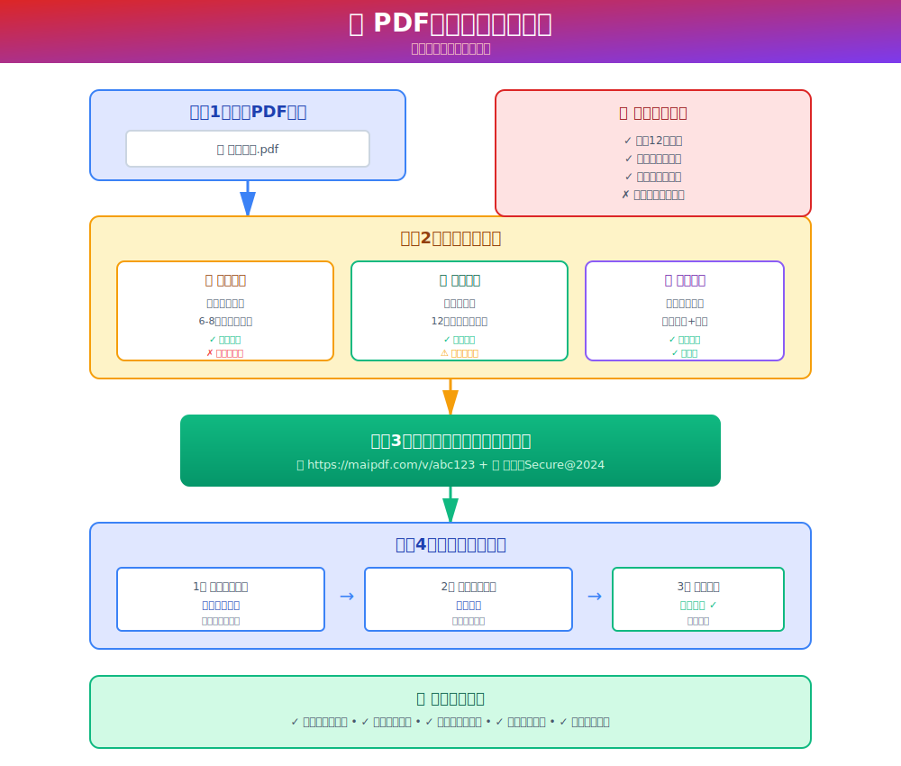
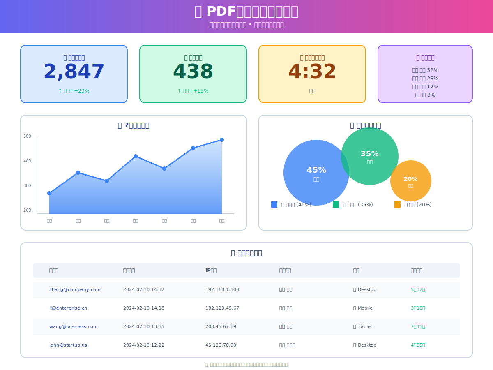
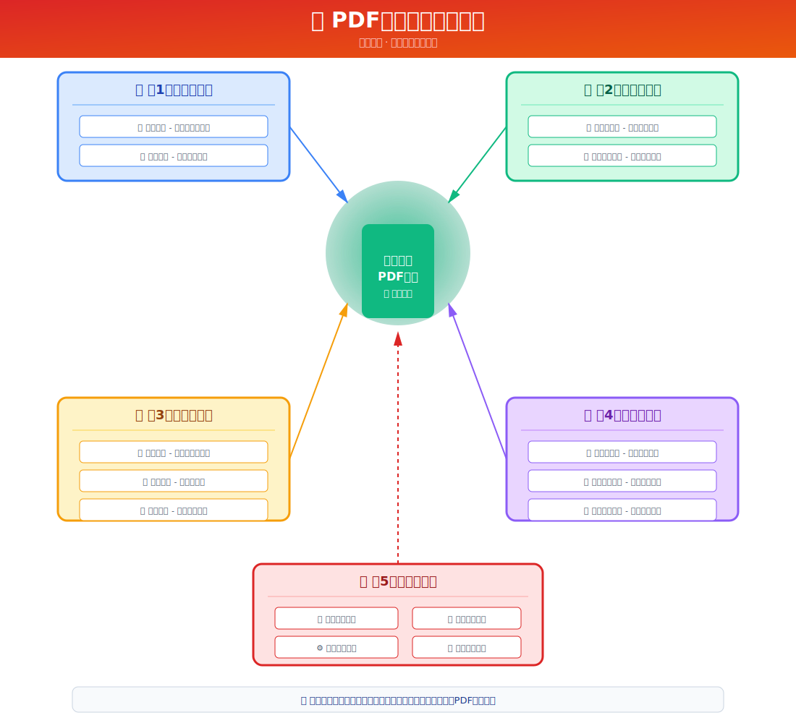
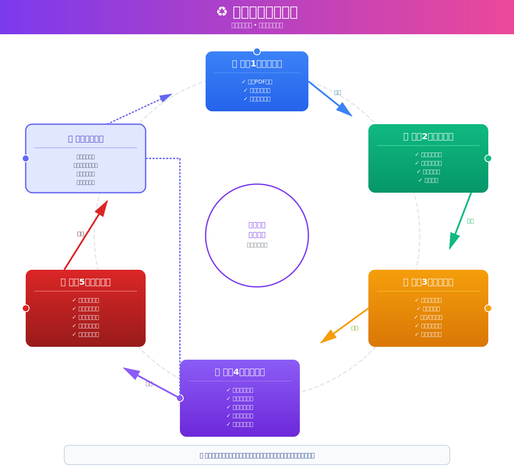

✅ 已成功创建4个中文动态SVG流程图
1. PDF密码保护完整流程 (zh-password-protection-workflow.svg)
展示3种保护级别：简单密码、复杂密码、邮箱验证，包含密码强度建议和用户访问流程

2. PDF访问统计分析看板 (zh-access-analytics-dashboard.svg)
实时数据展示、7天访问趋势折线图、设备类型分布和详细访问记录表格

3. PDF分享安全策略体系 (zh-sharing-security-strategy.svg)
五层防护架构图：访问控制→浏览限制→内容保护→实时监控→远程管控

4. 文档生命周期管理 (zh-document-lifecycle-management.svg)
完整闭环流程：创建→配置→分享→监控→管理→持续优化
